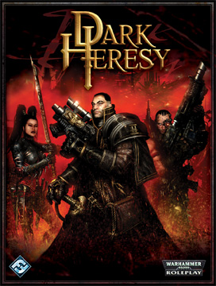

 In Dark Heresy, the players assume the role of a group of Acolytes working for an Inquisitor who sends them on various missions. Depending on the type of mission, the gameplay can involve investigation, combat, intrigue, or a number of other genres. Therefore, the Game Master can tailor his campaign to suit his player group. As the players work for an Inquisitor, most missions involve rooting out heresies or matters relating to them, but the bredth of the game allows for many other other missions, including wiping out dangerous gangs, gathering evidence of corruption, or eliminating rogue psykers.
Though the game was intended to eventually spawn two other core rulebooks covering different areas of the 40K universe, the initial releases concentrate on humanity, specifically agents of the Inquisition.
Black Industries chose to set the game in a previously undefined sector of space, Calixis Sector, within the Segmentum Obscurus. This sector lies adjacent to Scarus Sector, famed setting of Dan Abnett's Eisenhorn trilogy.Gra fabularna (inaczej RPG, z ang. role-playing game, nieraz zwana grą wyobraźni, potocznie erpegiem lub rolplejem)
Warhammer 40,000 (w dosłownym tłumaczeniu Młot Bojowy 40000, lub Wojenny Młot 40000) – strategiczna gra bitewna o rozległym tle fabularnym, zakładająca rozgrywkę dla dwóch, lub więcej graczy przy użyciu miniaturowych modeli pojazdów, żołnierzy i innych obiektów, opracowana przez brytyjskie studio Games Workshop.